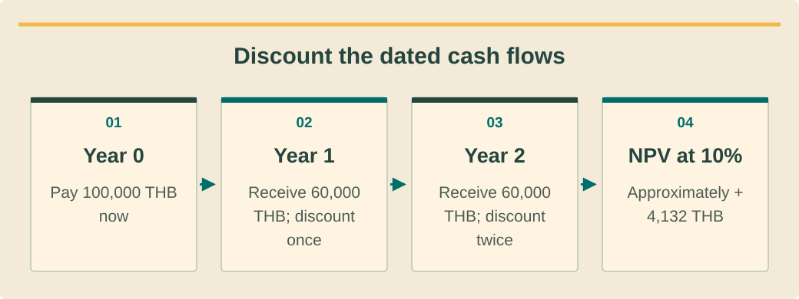

Finance and investment analysisכספים וניתוח השקעותการเงินและวิเคราะห์การลงทุน · 5 / 9
NPV, IRR and LCOE without false precisionNPV IRR ו־LCOE ללא דיוק מדומהNPV IRR และLCOEโดยไม่แม่นยำเกินหลักฐาน
Use financial metrics with consistent cash flows, dates and assumptions.להשתמש במדדים עם תזרים תאריכים והנחות עקביים.ใช้ตัวชี้วัดกับกระแสเงิน วัน และสมมติฐานสอดคล้อง
What you will be able to doמה תדעו לעשותสิ่งที่คุณจะทำได้
- Calculate and interpret discounted value.לחשב ולפרש ערך מהוון.คำนวณและตีความมูลค่าคิดลด
- Distinguish IRR and energy cost from customer savings.להבדיל תשואה ועלות אנרגיה מחיסכון לקוח.แยกIRRและต้นทุนพลังงานจากประหยัดลูกค้า
- Keep nominal/real and project/equity views consistent.להתאים נומינלי וריאלי ופרויקט והון.ทำมุมนอมินัล/จริงและโครงการ/ทุนให้ตรง
NPV asks whether value exceeds the chosen hurdleNPV בוחן ערך מול רף נבחרNPVถามว่ามูลค่าเกินเกณฑ์ที่เลือกหรือไม่
Use NPV=sum of cash flow at each date discounted to a common starting point. In a simple annual model, NPV=CF 0+sum(CFt/(1+r)^t). State the currency, cash-flow perspective, horizon and discount-rate basis before interpreting a positive result.NPV הוא סכום תזרימים מהוונים למועד משותף. במודל שנתי פשוט NPV=CF0+sum(CFt/(1+r)^t). ציינו מטבע, נקודת מבט, אופק ובסיס ריבית לפני פירוש תוצאה חיובית.NPVคือรวมกระแสเงินแต่ละเวลาคิดกลับจุดเริ่มร่วม แบบปีง่ายNPV=CF0+sum(CFt/(1+r)^t) ระบุสกุล มุมกระแสเงิน ระยะ และที่มาอัตราก่อนตีความค่าบวก
A positive NPV means the specified cash flows exceed the selected discount hurdle in that model, not that the forecast is certain. Review inputs and downside cases. For conventional upfront-cost/later-benefit cash flows, increasing the discount rate reduces the present value of later benefits.NPV חיובי אומר שהתזרים המסוים עובר רף היוון במודל, לא שהתחזית ודאית. בדקו קלט ושלילי. בתזרים רגיל של השקעה ואז תועלת, העלאת היוון מקטינה ערך נוכחי של תועלות עתידיות.NPVบวกหมายถึงกระแสที่กำหนดเกินเกณฑ์ในโมเดล ไม่ใช่คาดการณ์แน่นอน ตรวจข้อมูลและกรณีลบ กระแสปกติจ่ายต้นแล้วรับภายหลัง อัตราคิดลดสูงทำให้มูลค่าปัจจุบันประโยชน์ลด
IRR is a rate, not a promised outcomeIRR הוא שיעור ולא תוצאה מובטחתIRRเป็นอัตราไม่ใช่ผลรับประกัน
IRR is a discount rate that makes the specified cash flows’ NPV zero. Name whether it is project or equity IRR and the analysis period. Two investments can rank differently by IRR and NPV because their scale and timing differ.IRR הוא שיעור המאפס NPV לתזרים נתון. ציינו אם פרויקט או הון עצמי ואת התקופה. השקעות יכולות להידרג אחרת לפי IRR ו־NPV בשל היקף ועיתוי שונים.IRRคืออัตราที่ทำNPVของกระแสที่ระบุเป็นศูนย์ บอกว่าIRRโครงการหรือทุนเจ้าของและช่วงเวลา การลงทุนอาจเรียงต่างตามIRRกับNPVเพราะขนาดและจังหวะต่าง
Do not force an undefined result into a percentage. Unusual cash-flow sign changes or numerical issues require examination, and a high result may reflect missing costs or exaggerated benefits. Review the actual cash-flow series alongside the reported rate before presenting it.אין להפוך תוצאה לא מוגדרת לאחוז בכוח. שינויי סימן חריגים או בעיה מספרית דורשים בדיקה; שיעור גבוה עשוי לנבוע מעלות חסרה או תועלת מוגזמת. בדקו סדרה ליד השיעור לפני הצגה.อย่าฝืนผลไม่กำหนดให้เป็นเปอร์เซ็นต์ การสลับบวกลบผิดปกติหรือปัญหาตัวเลขต้องตรวจ ผลสูงอาจมาจากต้นทุนขาดหรือประโยชน์เกิน ตรวจชุดกระแสเงินจริงคู่ค่าอัตราก่อนนำเสนอ
See the ideaרואים את הרעיוןมองเห็นแนวคิด
Discount the dated cash flowsהיוון התזרימים לפי מועדคิดลดกระแสเงินสดตามเวลา

Read the diagram as textקריאת התרשים כטקסטอ่านแผนภาพเป็นข้อความ
- Year 0שנה 0ปี 0 — Pay 100,000 THB nowתשלום 100,000 באט היוםจ่าย 100,000 บาทวันนี้
- Year 1שנה 1ปี 1 — Receive 60,000 THB; discount onceקבלת 60,000 באט; היוון פעם אחתรับ 60,000 บาท คิดลดหนึ่งปี
- Year 2שנה 2ปี 2 — Receive 60,000 THB; discount twiceקבלת 60,000 באט; היוון לשנתייםรับ 60,000 บาท คิดลดสองปี
- NPV at 10%ערך נוכחי נקי ב־10%NPV ที่ 10% — Approximately +4,132 THBכ־4,132 באט חיובייםประมาณ +4,132 บาท
LCOE measures cost, not the bill avoidedLCOE מודד עלות ולא חשבון שנמנעLCOEวัดต้นทุนไม่ใช่บิลที่เลี่ยง
LCOE expresses defined lifecycle costs per unit of delivered energy under stated financial assumptions. Keep the energy boundary and treatment of storage charging explicit. A low LCOE can coexist with poor customer economics when little production offsets valuable imports.LCOE מבטא עלויות חיים מוגדרות ליחידת אנרגיה מסופקת בהנחות כספיות. הגדירו גבול אנרגיה וטעינת אגירה. עלות נמוכה יכולה להתקיים עם כדאיות לקוח חלשה כשמעט ייצור מחליף רכישה בעלת ערך.LCOEแสดงต้นทุนอายุที่กำหนดต่อพลังงานส่งมอบภายใต้สมมติเงิน ระบุขอบเขตพลังงานและชาร์จแบต LCOEต่ำอาจยังไม่คุ้มลูกค้าหากผลิตแทนไฟซื้อที่มีค่าน้อย
Compare like with like: same horizon, currency basis and relevant cost boundary. Do not subtract LCOE from a retail headline price and multiply by all generation as a shortcut to profit. The customer bill model and operating cash flows are still required.השוו אותו אופק, בסיס מטבע וגבול עלות. אין להפחית LCOE ממחיר כותרת קמעונאי ולכפול כל ייצור כקיצור לרווח. עדיין נדרשים מודל חיוב ותזרים תפעולי.เทียบระยะ ฐานเงิน และขอบเขตต้นทุนเหมือนกัน อย่าเอาราคาขายปลีกลบLCOEคูณผลิตทั้งหมดแล้วเรียกกำไร ยังต้องใช้โมเดลบิลและกระแสเงินเดินงาน
Match real and nominal assumptionsהתאמת הנחות ריאליות ונומינליותจับคู่อัตราจริงและนอมินัล
Nominal cash flows include price changes; real cash flows use constant purchasing-power units. Use a consistent discount basis. The relation is 1+nominal=(1+real)×(1+inflation). With training assumptions real 6% and inflation 2%, nominal is 8.12%, not simply 8%.תזרים נומינלי כולל שינויי מחירים; ריאלי ביחידות כוח קנייה קבוע. היוון עקבי. היחס1+נומינלי=(1+ריאלי)×(1+אינפלציה). בהנחות6% ריאלי ו־2% אינפלציה מתקבל8.12% ולא8%.กระแสนอมินัลรวมราคาที่เปลี่ยน กระแสจริงใช้กำลังซื้อคงที่ ใช้ฐานคิดลดให้ตรง สูตร1+นอมินัล=(1+จริง)×(1+เงินเฟ้อ) สมมติจริง6%เงินเฟ้อ2%ได้นอมินัล8.12%ไม่ใช่8%ตรงๆ
Keep project cash flows and equity cash flows separate: borrowing changes who funds the project and when cash reaches equity. Do not use a lender’s interest rate automatically as the owner’s hurdle. Document the approved discount assumption rather than copying US software defaults. Record the reviewer, approval date and reason for the selected hurdle.הפרידו תזרים פרויקט והון: הלוואה משנה מממן ומתי מזומן מגיע להון. אין להשתמש אוטומטית בריבית מלווה כרף בעלים. תעדו הנחת היוון מאושרת במקום העתקת ברירות מחדל אמריקאיות. תעדו בודק, מועד אישור ונימוק לרף שנבחר.แยกกระแสโครงการกับทุน กู้เปลี่ยนผู้ให้เงินและเวลาที่เงินถึงเจ้าของ อย่าใช้อัตราเงินกู้เป็นเกณฑ์เจ้าของอัตโนมัติ บันทึกอัตราที่อนุมัติแทนคัดค่าตั้งต้นสหรัฐ บันทึกผู้ตรวจ วันอนุมัติ และเหตุผลเกณฑ์ที่เลือก
Worked exampleדוגמה פתורהตัวอย่างพร้อมวิธีทำ
A two-year investmentהשקעה לשנתייםลงทุนสองปี
Pure training cash flows in thousands ofTHB: year 0−100, year 1+60, year 2+60. Discount rate 10%; tax and financing already excluded consistently.תזרים תרגול באלפי באט:שנה0−100,שנה1+60,שנה2+60. היוון10%; מס ומימון מוחרגים בעקביות.กระแสฝึกหน่วยพันบาท ปี0−100 ปี1+60 ปี2+60 คิดลด10% ตัดภาษีและเงินกู้อย่างสอดคล้อง
- PV of benefits=60/1.1+60/1.1²=104.132.ערך תועלות=60/1.1+60/1.1²=104.132.มูลค่าประโยชน์60/1.1+60/1.1²=104.132
- NPV=−100+104.132=4.132 thousandTHB.NPV=−100+104.132=4.132 אלפי באט.NPV−100+104.132=4.132พันบาท
- Solving NPV=0 gives IRR approximately 13.07% for this series.פתרוןNPV=0 נותןIRR כ־13.07% לסדרה.แก้NPV=0ได้IRRประมาณ13.07%สำหรับชุดนี้
The model clears the illustrative 10% hurdle. This mathematical example supplies no evidence that a real solar project will earn 13.07%.המודל עובר רף המחשה10%. דוגמה מתמטית אינה ראיה שפרויקט סולאר אמיתי ירוויח13.07%.โมเดลผ่านเกณฑ์สมมติ10% ตัวอย่างคณิตไม่พิสูจน์ว่าโซลาร์จริงจะได้13.07%
Your turnעכשיו מתרגליםถึงเวลาฝึกฝน
Test a lower-benefit caseבדיקת תועלת נמוכהทดสอบประโยชน์ต่ำลง
Keep the same initial 100 and 10% discount, but use 50 in each later year. Calculate NPV and compare the decision to the worked example.השאירו100 תחילי והיוון10%, אך השתמשו50 בכל שנה עתידית. חשבוNPV והשוו החלטה.ลงทุนต้น100คิดลด10%เดิม แต่รับ50แต่ละปีหลัง คำนวณNPVและเทียบการตัดสิน
- The recalculated NPV.NPV מחושב מחדש.NPVคำนวณใหม่
- A short decision note without guarantees.הערת החלטה ללא הבטחות.บันทึกตัดสินสั้นไม่รับประกัน
Compare with the model answerהשוו לפתרון לדוגמהเปรียบเทียบกับแนวคำตอบ
NPV=−100+50/1.1+50/1.21=−13.223 thousandTHB. The lower-benefit case does not meet the chosen hurdle. The undiscounted receipts total 100, but timing makes discounted value lower. Explain the assumption change rather than choosing whichever metric looks better.NPV=−100+50/1.1+50/1.21=−13.223 אלפי באט. התרחיש אינו עובר רף. תקבולים לא מהוונים100 אך עיתוי מפחית ערך. הסבירו שינוי הנחה במקום לבחור מדד נאה.NPV−100+50/1.1+50/1.21=−13.223พันบาท กรณีนี้ไม่ผ่านเกณฑ์ แม้รับรวมไม่คิดลด100 แต่เวลาทำให้มูลค่าต่ำ อธิบายสมมติที่เปลี่ยนไม่เลือกตัวชี้วัดที่ดูดี
Your exercise notebookמחברת התרגול שלכםสมุดแบบฝึกหัดของคุณ
Write your reasoning and the evidence you would collect. Notes stay in this browser. Export a copy to share with your trainer.כתבו את דרך החשיבה ואת הראיות שתאספו. המחברת נשמרת בדפדפן הזה. הורידו עותק כדי להעביר לבדיקה של אחראי ההדרכה.เขียนเหตุผลและหลักฐานที่จะรวบรวม บันทึกเก็บในเบราว์เซอร์นี้ ส่งออกสำเนาเพื่อส่งให้ผู้ฝึกสอนตรวจ
Before handing overלפני שמעבירים הלאהก่อนส่งมอบงาน
- State perspective and horizon.לציין נקודת מבט ואופק.ระบุมุมและระยะ
- Match nominal/real treatment.להתאים נומינלי וריאלי.จับคู่ฐานจริง/นอมินัล
- Review cash flows beside metrics.לבדוק תזרים לצד מדדים.ตรวจเงินสดคู่ตัวชี้วัด
Watch and applyצופים ומיישמיםดูแล้วนำไปใช้
A professional demonstrationהדגמה מקצועיתการสาธิตจากผู้เชี่ยวชาญ
Before pressing playלפני שמפעיליםก่อนกดเล่น
Follow how each future receipt is brought back to a common present date.עקבו אחר החזרת כל תקבול עתידי למועד נוכחי משותף.ติดตามวิธีนำเงินรับในอนาคตแต่ละครั้งกลับมายังวันปัจจุบันเดียวกัน
Present Value 4 (and discounted cash flow) | Finance & Capital Markets | Khan Academy
Khan Academy explains discounted cash flows. Apply the timing principle to a separately verified project cash-flow schedule; it is not a solar-return forecast.קהאן אקדמי מסביר תזרימים מהוונים. יש ליישם את עקרון התזמון על תזרים פרויקט שנבדק בנפרד; הסרטון אינו תחזית תשואה סולארית.Khan Academy อธิบายกระแสเงินสดคิดลด ใช้หลักเรื่องเวลากับตารางกระแสเงินสดโครงการที่ตรวจสอบแยกแล้ว ไม่ใช่การพยากรณ์ผลตอบแทนโซลาร์
Connect it to this lessonמחברים לחומר בשיעורเชื่อมกับบทเรียนนี้
NPV requires dated net cash flows and a consistent discount-rate basis.ערך נוכחי נקי דורש תזרים נטו מתוזמן ובסיס היוון עקבי.NPV ต้องใช้กระแสเงินสดสุทธิที่มีเวลาและฐานอัตราคิดลดสอดคล้องกัน
Pause and explainעוצרים ומסביריםหยุดแล้วอธิบาย
Why is adding both 60,000 THB receipts without discounting insufficient?מדוע חיבור שני התקבולים של 60,000 באט בלי היוון אינו מספיק?เหตุใดการบวกเงินรับ 60,000 บาททั้งสองครั้งโดยไม่คิดลดจึงไม่เพียงพอ
The guidance is available in all three languages. The video keeps the publisher’s original audio; captions and translations depend on the publisher and YouTube. If the embedded player is unavailable, use the source link.הנחיות הצפייה זמינות בשלוש השפות. הסרטון נשאר בשפת המקור; כתוביות ותרגום תלויים במפרסם וב־YouTube. אם הנגן אינו זמין, פתחו את קישור המקור.คำแนะนำมีครบสามภาษา วิดีโอใช้เสียงต้นฉบับ คำบรรยายและการแปลขึ้นกับผู้เผยแพร่และ YouTube หากเครื่องเล่นใช้ไม่ได้ให้เปิดลิงก์ต้นฉบับ
Check your understanding · 80% to passבדיקת הבנה · ציון מעבר 80%ตรวจความเข้าใจ · ผ่านที่ 80%
Sources and review datesמקורות ותאריכי בדיקהแหล่งข้อมูลและวันที่ตรวจสอบ
- Net Present Value
Discounted cash-flow interpretation; forecasts remain assumption-dependent.פירוש תזרים מהוון; תחזית תלויה בהנחות.ตีความกระแสคิดลด คาดการณ์ยังขึ้นกับสมมติฐาน
- Internal Rate of Return
IRR for a specified cash-flow perspective, not a promised realized return.IRR לנקודת מבט תזרימית מוגדרת ולא תשואה בפועל מובטחת.IRRตามมุมกระแสเงินที่ระบุ ไม่รับประกันผลตอบแทนจริง
- Levelized Cost of Energy
Lifecycle energy-cost methodology; not a substitute for customer bill modeling.שיטת עלות אנרגיה למחזור חיים; לא תחליף למודל חשבון לקוח.วิธีต้นทุนพลังงานตลอดอายุ ไม่แทนโมเดลบิลลูกค้า
- Commercial Financing Parameters
Real/nominal consistency and financing parameters; no Thai market-rate recommendation.עקביות ריאלי ונומינלי ופרמטרי מימון; ללא המלצת שער שוק תאילנדי.ฐานจริง/นอมินัลและตัวแปรเงินกู้ ไม่แนะนำอัตราตลาดไทย
Reading and quizzes build knowledge. Field work and practical sign-off require the responsible qualified professional.קריאה וחידונים בונים ידע. עבודת שטח ואישור כשירות מעשית נעשים בהנחיית בעל המקצוע המוסמך והאחראי.การอ่านและแบบทดสอบสร้างความรู้ งานภาคสนามและการรับรองความสามารถปฏิบัติต้องอยู่ภายใต้ผู้เชี่ยวชาญที่มีคุณสมบัติและรับผิดชอบ